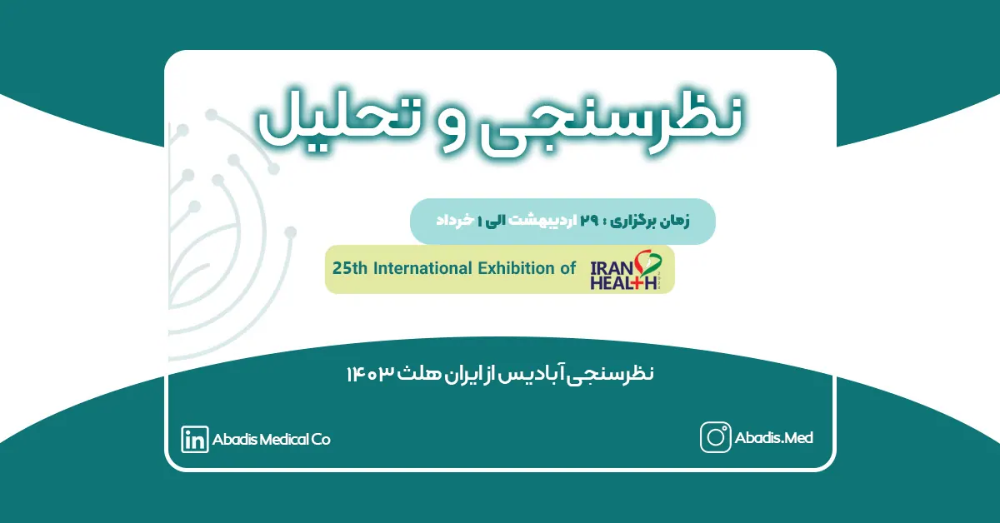
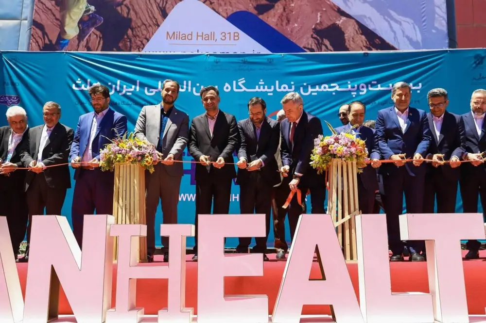

بیستوپنجمین نمایشگاه بینالمللی ایران هلث در تاریخ 29 اردیبهشت الی 1 خرداد 1403 از ساعت ۸ الی ۱۵ در محل دائمی نمایشگاه بین المللی برگزار میگردد. به نقل از آیمد ۹۰ در این نمایشگاه ۷۰۲ شرکت حضور دارند؛ و همچنین شرکتهای خارجی از ۱۴ کشور دنیا در ایران هلث ۲۰۲۴ حضور خواهند داشت.
ایران هلث ۲۰۲۴ با رویکرد توجه به شرکتهای دانشبنیان حوزه سلامت و با محوریت پارک فناوری پردیس برگزار میشود. به نقل از دنیای اقتصاد هدف اصلی این نمایشگاه ارتقاء سطح دانش فنی و علمی در حوزه بهداشت و درمان، ارائه راهکارهای نوین برای بهبود خدمات پزشکی و دندانپزشکی، معرفی تجهیزات پزشکی و آزمایشگاهی پیشرفته، ارتقاء کیفیت و ایمنی محصولات دارویی، جذب سرمایهگذاری و افزایش همکاریهای بینالمللی در زمینه صنایع بهداشت و درمان است.
افتتاحیه ایران هلث ۲۵ با حضور معاون علمی و فناوری رئیس جمهوری،رئیس سازمان غذا و دارو، معاون وزیر صنعت و تجارت روسیه و متخصصین صنعت تجهیزات پزشکی کشور در محل دائمی نمایشگاههای بینالمللی تهران برگزار شد. ایران هلث ۱۴۰۳ حدود ۲۰۰ میهمان خارجی داشته است.
به نقل از پارک فناوری پردیس، دهقانی فیروزآبادی،معاون علمی،فناوری و اقتصاد دانشبنیان رئیسجمهور در آیین افتتاح نمایشگاه بیان کرد:امروز صنعت سلامت بسیار توانمند است. اگر مانعی برای این صنعت ایجاد نکنیم، افقهای بزرگی برای کشور ترسیم خواهد کرد. درطی دوران مختلف سیاست توسعه سلامت و امنیت موردتوجه همه دولتهاقرارگرفته است. نتیجه این توجه باعث شده که توان زیرساختی عظیم و برنامه حمایتی قوی در این دو حوزه ایجاد شود.در این دوره نیزحمایت از اقتصاد دانشبنیان و توجه به حوزههای راهبردی امنیت و سلامت مورد توجه قرار گرفته است.بیشترین حمایت مالی،تسهیلات و تنظیمگری معاونت علمی نیز مربوط به حوزه سلامتاست.
وی افزود: اگر دو اقدام اساسی درکشور اجرایی شود،قطعا اتفاقات کلانی دراین حوزه رخ خواهدداد. اقدام اول،این است که متعهد شویم اگر فردی در این حوزه سرمایه گذاری می کند،معادل ۷۰ درصد خارجی،از تولیدات داخلی خریداری شود تا به این ترتیب سرمایهگذاران دلگرمتر در این حوزه فعال بمانند. اقدام دوم نیز اعطای ارز ترجیحی به مصرفکننده نهایی است. این اقدامات میتواند ما را در تراز بزرگترین کشورهای فعال درحوزه اقتصاد دانشبنیان سلامت قراردهد.

به گزارش ستاد خبری نمایشگاه ایران هلث؛ امین رضا خالقیان دبیر بیستوپنجمین نمایشگاه ایران هلث،در حاشیه برگزاری این نمایشگاه بیان کرد:ایران هلث بزرگترین رویداد حوزه سلامت است و علاوهبراینکه ویترین توانمندیهای سلامت کشور است،فرصت مناسبی است تا شرکتها به فرصتهای سرمایه گذاری و بازار دسترسی پیدا کنند.
وی با اشاره به حضور مهمانان خارجی در این نمایشگاه اظهار کرد:حضور شرکتهای دانش بنیان و فناور در این نمایشگاه بسیار حائز اهمیت است تا بتوانند مذاکرات تجاری سازی با طرفهای مورد انتظار را داشته باشند.
دبیر نمایشگاه ایران هلث به حضور کشورهای ایتالیا،اسپانیا،سویس،هند،هلند،بلژیک،تایلند،فرانسه،کره جنوبی،ژاپن،چین و روسیه در این نمایشگاه اشاره کرد و گفت:دو کشور چین و روسیه علاوه بر حضور،پاویونی نیز در این نمایشگاه برپا کردهاند.
خالقیان،با اشاره به تفاوتهای برگزاری این دوره از نمایشگاه نسبت به سایر دوره ها خاطر نشان کرد:یکی از تفاوتهای اصلی این دوره با دورههای گذشته حضور شرکتهای مهمان است که نسبت به سالهای قبل رشد ۳۵ درصدی را نشان می دهد.
به نقل از درمانا،حیدر محمدی رئیس سازمان غذا و دارو در مراسم افتتاحیه بیست و پنجمین نمایشگاه ایران هلث اظهار کرد: در سال 1402 نسبت به سال 1401 دغدغه ی کمتری در زمینه تامین اقلام سلامت داشتیم؛تحریم ها روی تامین دارو و تجهیزات پزشکی تاثیر منفی نداشته است.وی افزود: قرار است ماهانه پنج محصول جدید به سبد محصولات تجهیزات پزشکی کشور اضافه شود.
درمانا اظهار کرد: با حمایت معاونت علمی و فناوری رئیس جمهوری، بیست و پنجمین ایران هلث رنگ و بوی علمی و تکنولوژی و استارتاپ محور گرفته است.
همچنین به گزارش آیمد 90 با حضورمعاون علمی رئیس جمهور و رئیس سازمان غذا و دارو از 16 محصول دانش بنیان و فناور حوزه سلامت از جمله تجهیزات و اقلام مصرفی پزشکی در نمایشگاه ایران علث 1402 رونمایی شد.
به گزارش از درمانا،دبیر نمایشگاه ایران هلث یکی از نقصهای جدی نمایشگاه را ساعت کاری آن دانست؛ و اظهار نمود شرکت ها تا ساعت 10 بهرهای نداشتند.
همچنین درمانا در مصاحبه با صدرا سپهری رئیس انجمن صنفی تولید،تامین،توزیع و صادرکنندگان تجهیزات و ملزومات پزشکی و دارویی و مدیر عامل شرکت آرگون مدیکال درباره دلایل عدم حضور این شرکت و برخی دیگر از شرکت ها در نمایشگاه ایران هلث اظهار کرد:ساعت و زمان بندی نامساعد نمایشگاه،افزایش قیمت غرفهها و ناهماهنگی و عدم ارتباط موثر مجری برگزاری نمایشگاه با شرکتها از دلایل عدم حضور برخی شرکت ها در این نمایشگاه بود.
وی افزود:برگزار کننده بیستوپنجمین دوره ایران هلث بیان کرده بود که برای حل اختلاف بین بخش حضوری آمده است در صورتی که چنین چیزی قابل پذیرش نیست و برگزار کننده این دوره نمایشگاه مرجع حل اختلاف بین بخش خصوصی نیست.مادامی که بخش خصوصی به عنوان ذی نفع و متولی نمایشگاه ایران هلث نباشد متاسفانه باید بگویم که نتیجه و خروجی دلخواه حاصل نخواهد شد.
آیمد 90 برای بررسی میزان رضایت صاحبان بنگاه های اقتصادی فعال در عرصه تجهیزات پزشکی از حضور در نمایشگاه ایران هلث 1403 نظر سنجی برای غرفهداران برگزار کرد. این نظر سنجی به نقاط قوت و ضعف ایران هلث و بررسی حضور شرکت های تجهیزات پزشکی در نمایشگاه ایران هلث پرداخته شد.
همچنین پارک فناوری پردیس نظرسنجی نمایشگاه ایران هلث را برای بهبود برگزاری نمایشگاه ایران هلث را طراحی نمود.
شرکت دانش بنیان مخازن طبی آبادیس در بیست و پنجمین نمایشگاه ایران هلث حضور نداشت؛ اما همواره در راستای شعار خود یعنی اثرگذاری در تلاش است. به همین جهت یک کار علمی، حرفهای و تخصصی را به کمک شرکت ویراکام برای تحلیل داده به وسیله هوش تجاری و بررسی نمایشگاه های تجهیزات پزشکی در ایران آغاز نمود.
مرحله اول این پروژه در طول برگزاری ایران هلث ۱۴۰۳ کلید خورده است. این مرحله، نظرسنجی داده محور از غرفه داران و بازدیدکنندگان این نمایشگاه انجام میشود. مراحل بعدی این پروژه علمی-تخصصی متعاقبا به فعالین صنعت تجهیزات پزشکی اعلام خواهد شد.
در نظرسنجی مرحله اول آبادیس ۲۶۲ نفر شرکت نمودند.
این خبر در تمامی مراحل به روز رسانی می شود و گزارش های هر مرحله در این خبر ضمیمه خواهد شد.